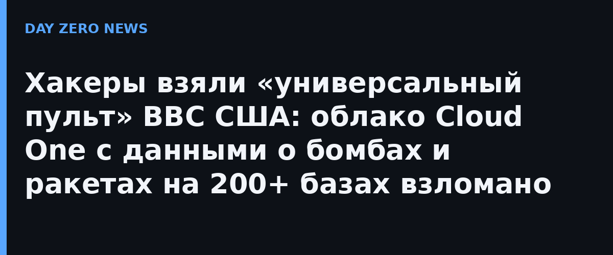

По информации Reuters (два источника, знакомые с ситуацией), хакеры проникли в Cloud One — флагманскую облачную платформу ВВС США. Взлом обнаружили в течение последнего месяца, когда платформа как раз обновлялась. Агентство не установило, кто стоит за атакой, насколько глубоким было проникновение и были ли украдены данные. Отдельного официального анонса нет: ВВС ограничились формулировкой, что «не комментируют уровень защищённости, уязвимости и операционный статус конкретных сетей и систем». Для оценки ущерба к расследованию подключили US Cyber Command — киберподразделение Вооружённых сил США, но и оно от комментариев воздержалось.
Платформу запустили в 2017 году как единый IT-фундамент ВВС: она агрегирует облачные сервисы сразу четырёх гигантов — Microsoft, Amazon, Oracle и Alphabet — и держит всё от кадровых документов и расчётов с персоналом до логистики и обслуживания самолётов. Поверх неё работают два критичных контура: Cloud-Based Command and Control, сводящий данные радаров ПВО со всей Северной Америки, и Theatre Integrated Combat Munitions System, который следит за бомбами и ракетами более чем на 200 базах ВВС США по всему миру. Один из источников Reuters резюмировал: «взлом здесь — это очень большое дело».
По словам источника, знакомого с ситуацией, хакеры использовали уязвимость в ПО, чтобы добраться до control plane — слоя управления всем облаком, который собеседник агентства сравнил с «универсальным пультом»: теоретически он позволяет проверить боеготовность самолётов или проследить перемещение запчастей. Конкретную уязвимость Reuters установить не удалось, все пять источников говорили анонимно. Взлом уже дал побочный эффект: миграцию служебных приложений в Cloud One приостановили, обновления работающих приложений заблокированы — военные не могли ставить патчи даже тогда, когда новые дыры раскрывали по всей индустрии, а часть пользователей лишили прав администратора. Подрядчиком платформы до 2025 года была SAIC, теперь — Leidos; обе компании комментировать инцидент не стали.
Cloud One — хрестоманийный кейс риска «единой консоли»: четыре публичных облака, сотни систем и тысячи приложений сведены в одну точку управления, и пробой управленческого слоя ставит на паузу всё сразу. Любопытна и предыстория: в 2023 году руководство платформы хвасталось «100-процентной успешностью» отражения атак. Инцидент случился на фоне серии утечек в госсекторе США (два взлома вокруг ФБР, интрузия с данными Пентагона, утечка кадровых данных Министерства внутренней безопасности, взломы как минимум двух разведведомств и Казначейства) — и, как отмечает Reuters, на фоне растущих опасений, что для поиска слабостей в крупных сетях злоумышленникам всё активнее помогают ИИ-инструменты.